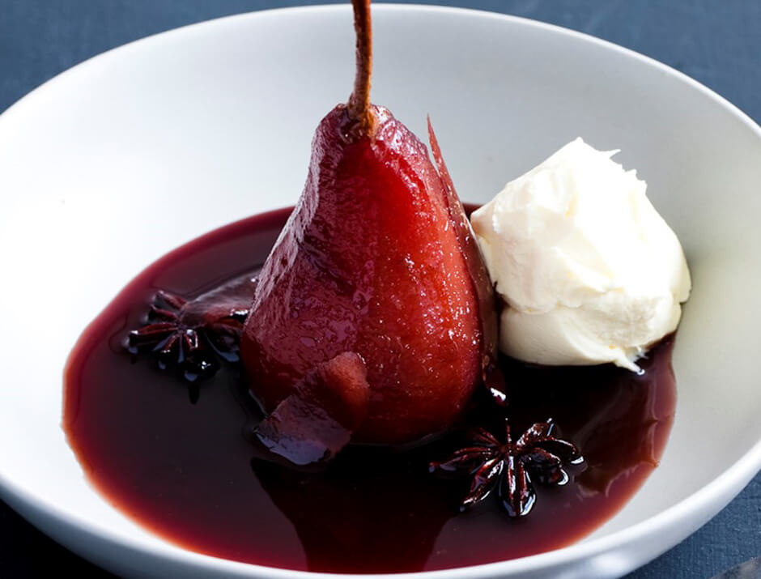

Peras al vino
el origen de esta receta se produjo en la Francia medieval, un país que por aquel entonces ya destacaba por la producción de vino. Como decíamos, la idea de macerar la fruta para conseguir este delicioso postre, surgió el la época medieval, más concretamente en el siglo XVI. Por aquel entonces, las peras eran cocidas en almíbar para aprovechar los excedentes de fruta y vino que se producían a principios del otoño.
Link de la informacionMousse de maracuyá

La mousse es una de esas palabras que solo con pronunciarlas se nos hace la boca agua, con una textura fina y esponjosa, una elaboración que se puede preparar tanto para platos dulces como para platos salados. El origen de la mousse se remonta a la Francia del siglo XVIII, cuando aparece por primera vez en un recetario del cocinero francés Menon. En él, se describían tres tipos de mousse: de chocolate, café y azafrán. Sin embargo, existen otras teorías que afirman que su origen es posterior y que fue creada por el pintor francés, Henri de Toulouse-Lautrec, casi a finales del siglo XIX.
Link de la informacionPanna cotta

Algunas fuentes datan la receta de la panna cotta a principios del siglo XX, y se originó en Italia, concretamente en el Piamonte. Se dice que una mujer húngara que vivía entonces en la región de las Langhe creó una especie de pudín aromatizado con bayas de vainilla combinando unos humildes ingredientes: nata, leche, azúcar y unos gramos de gelatina.
Link de la informacion